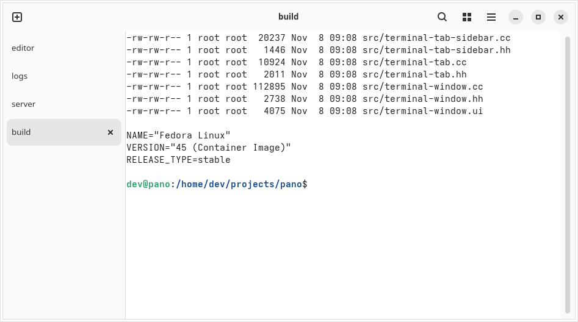

Pano Terminal
Pano Terminal
Tab bar position
Top, bottom, left or right, with a vertical tab list for the sides.
Pano Terminal is a fast, native terminal emulator built with GTK 4, libadwaita and VTE. It keeps everything you know from GNOME Terminal and adds the power-user features it leaves out.
Place the tab bar at the top, bottom, left or right of the window. On the left and right, tabs become a vertical list, so long titles stay readable even with many tabs open. Change it any time in Preferences → Appearance → Tab Bar Position.

Pano builds on the solid base of GNOME Terminal. New features land one at a time; follow them on the roadmap.
Top, bottom, left or right, with a vertical tab list for the sides.
Run several terminals side by side or stacked in one tab, and move between them with Alt and the arrow keys.
Reopen your windows, tabs and panes, each in its previous folder, when you start Pano Terminal again.
Adjustable background opacity for each profile; text, header bar and tabs stay opaque.
Get notified when a long-running command finishes in a background tab, and jump back to it with a click.
Separate fonts, colors, commands and scrolling settings for each kind of work.
GTK 4 and libadwaita, with light and dark styles that follow your system.
Search the scrollback with regular expressions and open links and hyperlinks with a click.
There are no packages yet. Build Pano from source; it is tested with GTK 4.24, libadwaita 1.10 and VTE 0.84.
Fedora:
sudo dnf install meson ninja-build gcc-c++ gtk4-devel libadwaita-devel \
vte291-gtk4-devel pcre2-devel libuuid-devel gsettings-desktop-schemas-devel \
gettext itstool desktop-file-utils libxslt docbook-style-xslDebian and Ubuntu:
sudo apt install meson ninja-build g++ libgtk-4-dev libadwaita-1-dev \
libvte-2.91-gtk4-dev libpcre2-dev uuid-dev gsettings-desktop-schemas-dev \
gettext itstool desktop-file-utils xsltproc docbook-xslgit clone https://github.com/aripdcom/pano.git
cd pano
meson setup _build --prefix=$HOME/.local -Dsearch_provider=false -Dnautilus_extension=false
ninja -C _build
ninja -C _build install
If your distribution ships an older VTE, add
--force-fallback-for=vte-2.91-gtk4 to the
meson setup command to build VTE along with Pano.
Pano Terminal installs as pano-terminal and keeps its
own settings, so it works side by side with GNOME Terminal.